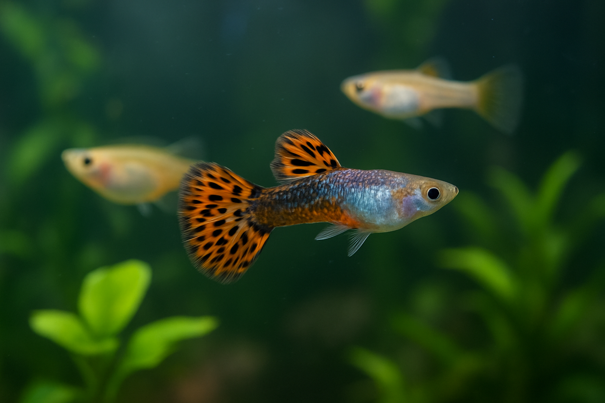
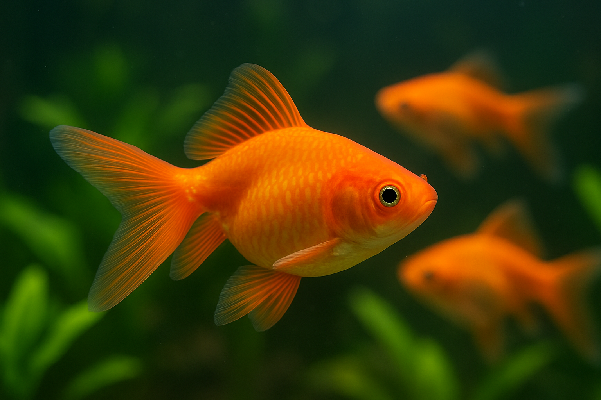
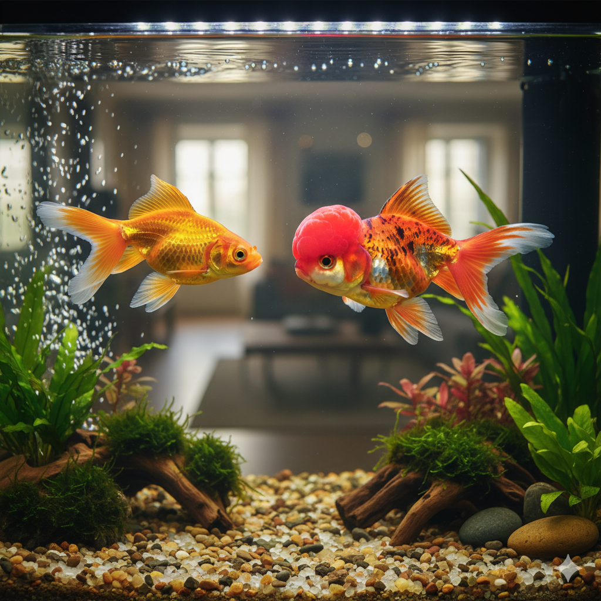
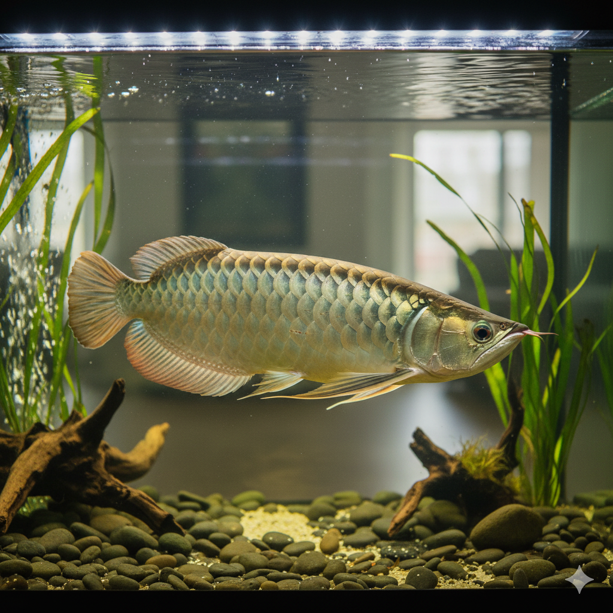
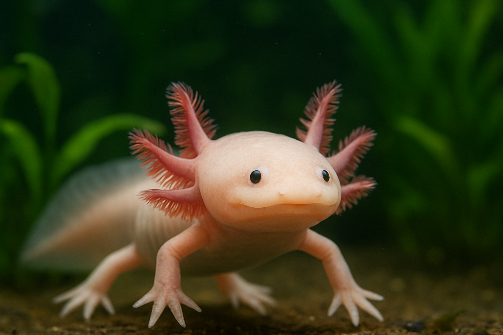
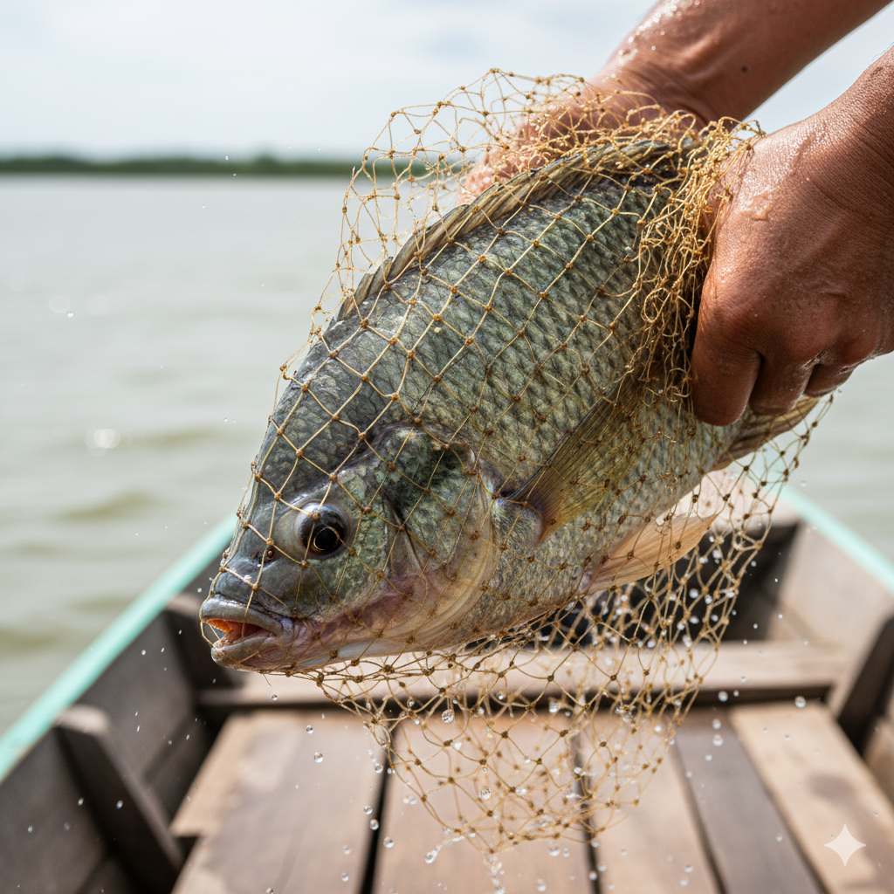
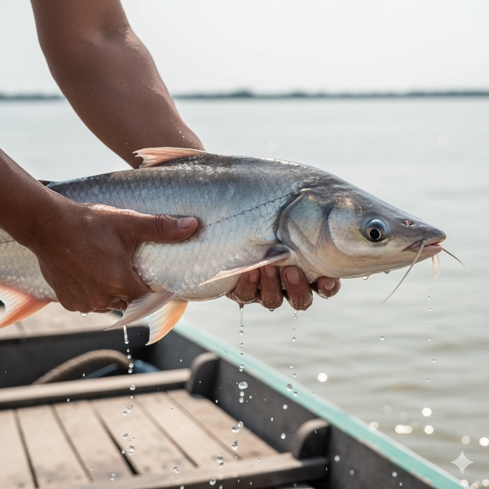
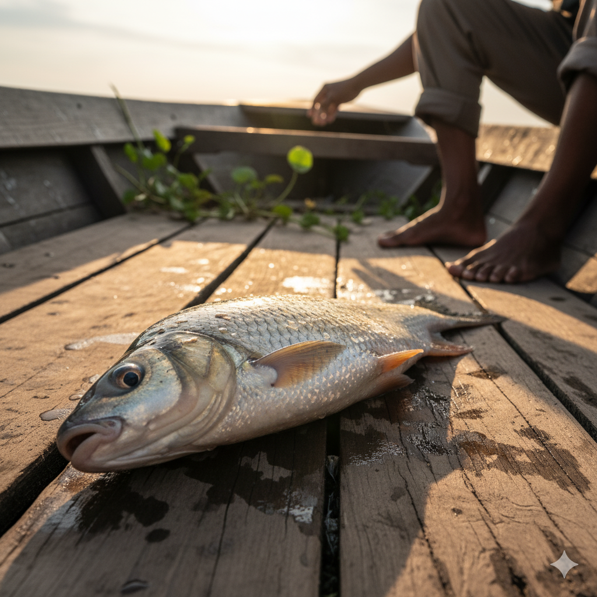

Fishery Guidance
Explore detailed information on ornamental and food fishes.
Aquaculture Classifications
The aquaculture industry recognizes this fundamental division based on purpose.
Ornamental Aquaculture (Aquariculture)
Culture of attractive, colorful fish for aesthetic purposes.
Food Fish Aquaculture (Pisciculture)
Commercial breeding of fish primarily for food production.
Characteristics & Market Dynamics
Characteristics
- Purpose: Decorative, aesthetic, and hobby purposes.
- Market: Pet trade, aquarium hobbyists, and collectors.
- Value: Sold individually at premium prices based on rarity, color, and health.
- Production Scale: Can be done in smaller spaces with lower investment.
- Species Examples: Guppies, goldfish, angelfish, tetras, barbs, mollies, platys.
Market Dynamics
- Global trade worth over $15 billion.
- Over 1,800 species available in the market.
- 90% of freshwater ornamental fish are captive-bred.
- India exports about 210 indigenous ornamental species.
- Growing at 14% annually in India.
Popular Species

GUPPY (Poecilia reticulata)
Native Status: EXOTIC
Category: Ornamental
Size: 1.5-2.5 inches
pH Range: 6.8-7.8
Temperature: 74-82°F
Diet: Omnivorous
Breeding: Livebearer

MOLLY (Poecilia species)
Native Status: EXOTIC
Category: Ornamental
Size: 3-5 inches
pH Range: 7.0-8.5
Temperature: 68-82°F
Diet: Omnivorous (Herbivorous tendency)

GOLDFISH (Carassius auratus)
Native Status: EXOTIC
Category: Ornamental (Cold-water)
Size: 6-14 inches
pH Range: 6.5-8.4
Temperature: 65-75°F
Diet: Omnivorous
Requires powerful filtration!

AROWANA (Scleropages species)
Native Status: EXOTIC
Category: Large Predator
Size: 24-36 inches
pH Range: 6.5-7.5
Temperature: 75-82°F
Diet: Carnivorous
Excellent jumper, secure lid needed!

AXOLOTL (Ambystoma mexicanum)
Native Status: EXOTIC
Category: Aquatic Amphibian
Size: 8-12 inches
pH Range: 6.5-8.0
Temperature: 60-68°F
Diet: Carnivorous
Chiller essential in India!
Characteristics & Market Dynamics
Characteristics
- Purpose: Human consumption and nutrition.
- Market: Food industry, restaurants, retail food markets.
- Value: Sold in bulk quantities by weight.
- Production Scale: Requires larger water bodies and higher investment.
- Species Examples: Tilapia, catfish, salmon, trout, carp, rohu.
Market Dynamics
- Focus on high-protein species for nutrition
- Mass production for food security
- Integration with agricultural waste management
- Emphasis on growth rate and feed conversion efficiency
Popular Species

TILAPIA (Oreochromis niloticus)
Native Status: EXOTIC
Category: Food Fish
Major States: AP, WB, MH, TN
Total Production: ~70,000 MT
Seed Source: IndiaMart

PANGASIUS (Pangasianodon hypophthalmus)
Native Status: EXOTIC
Category: Food Fish
Largest Producer: Andhra Pradesh
2018 Production: 855,500 MT
Seed Source: IndiaMart

MRIGAL (Cirrhinus mrigala)
Native Status: NATIVE
Category: Food Fish
Natural Range: Ganga, Brahmaputra rivers
Farming Method: Polyculture
Seed Source: IndiaMart
Special Considerations for Indian Aquarists
Climate Adaptations
Most ornamentals adapt well. Goldfish and Axolotls require cooling systems. Power backups are essential for temperature-sensitive species.
Legal & Ethical
Alligator Gar is prohibited. Native carps are for commercial farming. Always check state-specific laws and CITES regulations.
Economic Factors
Factor in setup and operating costs, especially for chillers. Many ornamental species are now bred locally, improving availability.